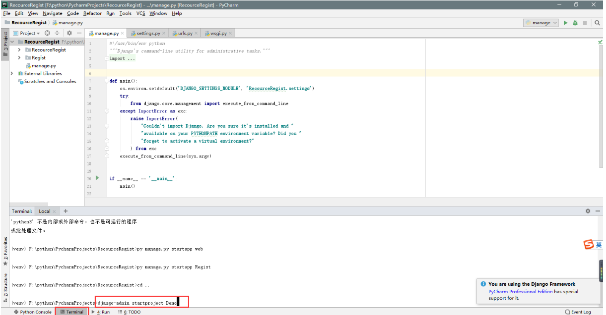
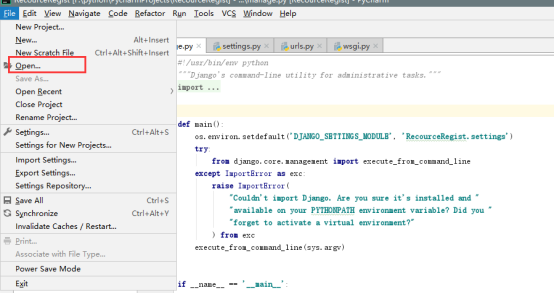
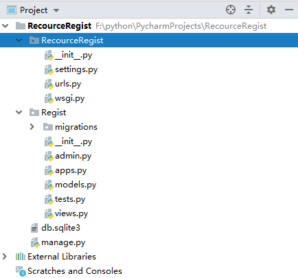

一．django框架使用及创建项目
（1）创建Django项目
1>在cmd命令行下输入：django-admin startproject RecourceRegist（进入相应路径下)
2>pycharm社区版,在terminal中输入命令创建项目：django-admin startproject RecourceRegist

（2）导入Django项目
在pycharm中file中open刚在所建的项目

（3）创建应用
1>在cmd命令行下输入：python manage.py startapp Regist （进入相应路径下）
2>在pycharm中terminal中输入命令创建项目：python manage.py startapp Regist
（4）查看目录

（5）启动服务
1>在cmd命令行下输入：python manage.py runserver （cmd命令下先进入Demo所在的目录）
2>在pycharm中terminal中输入命令启动项目：python manage.py runserver
（6） 服务运行起来之后，可以在浏览器输入默认的访问地址127.0.0.1:8000